기계정비산업기사 (2007-03-04 기출문제)
1과목: 공유압 및 자동화시스템
1. 다음 중 2 차 압력을 일정하게 만들 수 있는 밸브는?
- 갑압벨브
- 릴리프밸브
- 시퀸스밸브
- 무부하밸브
(정답률: 55%)

2. 다음 기호 중 릴리프 밸브는?
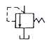
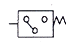
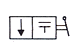
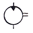
(정답률: 89%)
3. 유압펌프의 동력 (Lp) 을 구하는 식으로 맞는 것은? (단, p=펌프토출압 (kg/cm2) . Q=이론토출량 (l/min) η = 전효율 이다 )
- Lp=P x Q /450 η kW
- Lp=P x Q /612 η kW
- Lp=P x Q /7500 η kW
- Lp=P x Q /10200 η kW
(정답률: 43%)
4. 압축공기 내 오염 물질의 영향 중 적합하지 않은 것은?
- 필터, 윤활기 등의 활성수지 파손
- 슬라이딩부 등의 홈집이나 부식발생
- 밸브의 고착, 마모, 시일 불량 발생
- 실린더의 진동 발생
(정답률: 58%)
5. 동조회로 ( 싱크로나이징 ) 란?
- 복수 실린더나 모터를 가변속도로 동작시킬 때
- 복수 실린더나 모터를 등속도로 동작시킬 때
- 단일 실린더나 모터를 가변속도로 동작시킬 때
- 단일 실린더나 모터를 등속도로 동작시킬 때
(정답률: 43%)
6. 다음 유압∙공유압 도면기호는 어떤 보조기기의 기호인가?
- 압력계
- 차압계
- 온도계
- 유량계
(정답률: 38%)
7. 왕복헝 공기 압축기의 특징으로 맞는 것은?
- 진동이 적다.
- 고압에 적합하다.
- 소음이 적다.
- 맥동이 적다.
(정답률: 79%)
8. 1 기압은 수은주 760mmHg OI다. 상온의 물이라면 이것의 수두는 얼마인가?
- 0.76 m
- 1.034 m
- 7.6 m
- 10.34 m
(정답률: 61%)
9. 다음 중 단위 면적에 작용하는 수직방향의 힘을 무엇이라 하는가?
- 압력
- 하중
- 실린더
- 피스톤
(정답률: 46%)
10. 다음은 3위치 4포트 밸브 중 클로즈센터형 밸브에 대한 설명이다. 밸브의 설명이 옳지 않은 것은?
- 실린더를 임의의 위치에서 고정시킬 수 있다.
- 중립위치에서 펌프를 무부하 시킬 수 있다.
- 1개의 펌프로 2개 이상의 실린더를 작동시킬 수 있다.
- 급격한 밸브 전환시 서지압이 발생 된다.
(정답률: 35%)
11. 제어 (cont ro I) 에 대한 설명 중 옳은 것은?
- 측정장치 , 제어장치 등을 장비하는 것
- 어떤 목적에 적합하도록 대상이 되어 있는 것에 필요한 조작을 가하는 것
- 어떤 양을 기준으로하여 사용하는 앙과 비교하여 수치 나 부호로 표시하는 것
- 입력신호보다 높은 레벨의 출력신호를 주는 것
(정답률: 65%)
12. 발생되는 자력에 외하여 스위치 작동을 행하는 것은?
- 로드 셀
- 용량형 센서
- 리드 스위치
- 초음파 센서
(정답률: 67%)
13. 로터리 인덕싱 장치를 사용하는 경우로 적합한 것은?
- 공구를 주기적으로 교체해야 할 때
- 가공물이 여러 공정을 거쳐 작업될 때
- 큰 직경의 로드 형상 재질이 가공될 때
- 스트립 형태의 재질이 길이 방향으로 작업될 때
(정답률: 71%)
14. 연속적인 시간에 대하여 연속적인 정보를 가지는 신호는?
- 아날로그 신호
- 디지털 신호
- 이산시간 신호
- 불연속 신호
(정답률: 65%)
15. 1bar 의 압력 값과 다른 것은?
- 750.061 mmHg
- 14.507 PSI
- 100000 Pa
- 101325 N/m2
(정답률: 36%)
16. 직류 전동기가 저속으로 회전할 때 그 원인에 해당하지 않것은?
- 축받이 불량
- 단상 운전
- 코일의 단락
- 과부하
(정답률: 22%)
17. 휘발성 메모리의 일종으로 데이터 보존을 위한 리프레시(Ref lash) 신호가 계속 공급 띨어야 하는 것은?
- ROM
- DRAM
- SRAM
- EPRAM
(정답률: 48%)
18. 240kgf/cm2의 사용압력으로 5000Qkgf의 힘을 내고 0.5m 의 행정거리를 0.Q1m/sec 의 속도로 움직 이는 유압 프레스를 설계활 때 필요한 실린더 직경 및 펌프의 토출유량은 약 얼마인가?
- 16.3 mm, 11ℓ/min
- 163 mm, 11ℓ/min
- 17.3 mm, 12ℓ/min
- 273 mm, 12ℓ/min
(정답률: 47%)
19. 다음의 메모리 중에서 사용자가 1 번에 한하여 써 넣을 수 있는 것은?
- EAROM
- EEROM
- EPROM
- PROM
(정답률: 61%)
20. 공압 시스템의 고장 중 윤활유와 섞여 에멀전 상태 가 되거 나 수지상태가 되어 밸브의 동작이 방해 되는 고장의 원인은?
- 공급유량의 부족
- 이물질로 인한 고장
- 공기의 누설
- 수분으로 인한 고장
(정답률: 67%)
2과목: 설비진단관리 및 기계정비
21. 다응 중 변위센서에 해당하는 것은?
- 와전류식 센서
- 동전형 센서
- 압전형 센서
- 기전력 센서
(정답률: 48%)
22. 다응 급유법 중 가장 이상적인 급유법은 어느 것인가?
- 유욕 급유법
- 적하 급유법
- 강제순환 급유법
- 수 급유법
(정답률: 40%)
23. 윤활 상태 중 기름의 점도에 대하여 유체역학적 으로 설명 할 수 없는 유막의 성질 즉, 유성 (oilness)에 관계되며 시동이나, 정지 전, 후에 반드시 일어나는 윤활 상태는?
- 유체 윤활
- 극압 윤활
- 경계 윤활
- 완전 윤활
(정답률: 42%)
24. 설비의 노화를 나타내는 파라미터에 해당되지 않는 것은?
- 진동
- 소음
- 기름의 오염도
- 가격
(정답률: 81%)
25. 다음은 설비관리 조직을 설명한 것이다. 맞는 것은?
- 매트릭스(Matrix) 조직은 상사가 1인 이상이다.
- 제품중심조직은 특정 사업에 대한 집중적 기술투자가 쉽지 않다
- 기능중심조직은 전반적인 기술개발에 대한 총괄 업무의 부족현상이 발생한다.
- 제품중심조직은 고객 지향이 되지 못한다
(정답률: 46%)
26. 피크값 (편진폭)을 기준한 진동의 크기가 1 일 때 실효값의 크기는?
- 2
- 1/2
- 1/π
- 1/√2
(정답률: 75%)
27. 설비의 신뢰상 평가척도에 대한 설명으로 적절한 것은?
- 평균고장간격이란 신뢰성의 대상물이 사용되어 처음 고장이발생할 때 까지의 평균시간을 말한다.
- 평균고장시간이란 설비의 고장수에 대한 전 사용 시간의 비율을 말한다.
- 고장물이란 일정기간 동안 발생하는 단위시간당 고장 횟수롤 말한다.
- 보전성이란 어느 특정순간에 기능을 유지하고 있는 확률을 말한다.
(정답률: 38%)
28. 음의 한 파장이 전파되는데 소요되는 시간을 무엇이라 하는가?
- 파장
- 주파수
- 주기
- 변위
(정답률: 61%)
29. 다응 중 가장 경제적인 최적수리 주기는?
- 보전비가 최소일 때
- 열화손실이 최소일 때
- 열화로 인한 고장간격이 가장 길 때
- 열화손실과 보전정비의 합이 최소일 때
(정답률: 56%)
30. 음향진단에서 주파수를 나타내는 관계식으로 옳은 것은?
- 소리속도 / 파장
- 파장 / 소리속도
- 밀도 / 소리속도
- 소리속도 / 밀도
(정답률: 47%)
31. 미끄럼 베어링에서 나타날 수 있는 진동현상은?
- 오일 휩 (oil whip)
- 미스얼라인먼트 (misaIignment)
- 압력 맥동
- 공동(cavitation)
(정답률: 36%)
32. 설비의 돌발적 고장이 발생 하였을 때의 손실이 아닌 것은?
- 제품의 불량에 의한 손실
- 품질저하에 따른 손실
- 생산계획착오로 인한 납기단축
- 돌발고장의 수리비의 지출
(정답률: 69%)
33. 정비계획에 필요한 예비품의 종류 중 전 공장에 영향을 미치는 동력 설비에서 많이 볼 수 있는 것은 무엇인가?
- 부분 예비품
- 라인예비품
- 단일기계 예비품
- 부분적 세트(set)예비품
(정답률: 46%)
34. 음파가 1초동안에 전파하는 거리를 무엇이라 하는가?
- 음압
- 음량
- 음속
- 음향임피던스
(정답률: 69%)
35. 정비작업 표준에서 표준시간의 결정방법이 아닌 것은?
- 경험법
- 실적자료법
- 작업연구법
- 관적 자료법
(정답률: 64%)
36. 소음 투과율의 정의로 알맞은 것은?
- 투과된 에너지 / 입사에너지
- 10 log( 입사에너지 / 투과된 에너지 )
- 입사에너지 / 투과된 에너지
- 10 log( 투과된 에너지 / 입사에너지 )
(정답률: 45%)
37. 팽창식 체임버의 소음홉수 능력을 결정하는 기본 요소는?
- 진동비
- 체적비
- 면적비
- 소음비
(정답률: 52%)
38. 차음벽의 무게는 중간 이상 주파수 소음의 투과손실을 결 정한다. 무게를 두배 증가시킬 때 투과 손실은 이론적으로 얼마나 증가 하는가?
- 2 dB
- 4 dB
- 5 dB
- 6 dB
(정답률: 70%)
39. 롤링 베어링에 발생하는 진동의 종류가 아닌 것은?(문제 오류로 보기 3, 4번 내용이 정확하지 않습니다. 정확한 보기 내용을 아시는분 께서는 오류 신고를 통하여 내용 작성 부탁드립니다. 정답은 4번 입니다.)
- 다듬면의 굴곡에 의한 진동
- 베어링 구조에 기인하는 진동
- 2개월
- 6개월
(정답률: 62%)
40. 다음중 보전조직의 형태가 아닌 것은?
- 절충보전
- 부분보전
- 사후보전
- 집중보전
(정답률: 35%)
3과목: 공업계측 및 전기전자제어
41. 열전온도계에 이용하는 현상은?
- 펠티어 효과
- 지벡 효과
- 줄 효과
- 피에조 효과
(정답률: 75%)
42. 일반적인 제어계의 기본적 구성에서 조절부와 조작부로 표현되는 것은?
- 비교부
- 외란
- 제어요소
- 작동신호
(정답률: 59%)
43. 전기자 철심용으로 얊은 규소 강판을 성층하는 이유는?
- 비용 절감
- 기계손 감소
- 와류손 감소
- 가공 용이
(정답률: 54%)
44. 국제 단위계 {SI) 에서 사용되는 기본 단위가 아닌것은?
- 시간
- 부피
- 질량
- 광도
(정답률: 61%)
45. 비접촉 검출 스위치의 종류에 해당되지 않는 것은?
- 광전 스위치
- 마이크로 스위치
- 초음파 스위치
- 근접 스위치
(정답률: 51%)
46. 그림과 같은 반전 증폭기의 입력전압과 출력전압의 비、즉 전압이득을 바르게 표현한 식은?
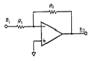
- R2/R1
- -R2/R1
- (1+R2/R1)
- (1-R2/R1)
(정답률: 61%)
47. 축전기의 정전용량을 C[F], 전위차를 v [V], 저장 된 전기량울 Q[C]이라고 할 때 정전 에너지를 나타내는 식중 옳지 않은 것은?
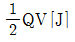
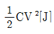
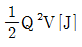
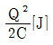
(정답률: 61%)
48. 도선에 흐르는 교류 전류를 측정하기 위한 계기는?
- 절연 저항계
- 클램프 미터
- 회로 시험기
- 접지저항계
(정답률: 46%)
49. 두 코일의 자체인덕턴스를 L1, L2 결합계수를 K라 할때 상호 인덕턴스는 어떻게 나타내는가?
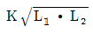
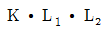


(정답률: 52%)
50. 잔류 편차가 발생하는 제어계는?
- 비례 제어계
- 적분 제어계
- 비례 적분 제어계
- 비례 적분 미분 제어계
(정답률: 49%)
51. 일명 'PD 미터라고토 부르며 오발 (OVAl) 기어형과 루츠(ROOTS)미터형을 주로 사용하고 있는 유량 계는?
- 전자 유량계
- 와류식 유량계
- 용적식 유량계
- 터빈식 유량계
(정답률: 58%)
52. 전원 회로에서 리플 (ripple) 전압이란?
- 정류된 직류전압
- 정류된 전압의 교류분
- 부하시의 전압
- 무부하시의 전압
(정답률: 35%)
53. 전동밸브외 제어성을 양호하게 하기 위하여 사용되는 포지셔너 (POSitioner) 는?
- 전기- 전기식 포지셔너
- 전기 -유압식 포지셔너
- 전기- 공기식 포지셔너
- 공기 -공기식 포지셔너
(정답률: 68%)
54. 다응 그림과 같은 압력의 측정표시는 어떤 압력을 측정하는 방법인가?
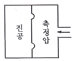
- 절대 압력
- 게이지 압력
- 차압
- 정압
(정답률: 54%)
55. 계측된 신호를 전송할 때 발생하는 노이즈의 원인이 아닌것은?
- 전도
- 정전 유도
- 중첩
- 온도변화
(정답률: 64%)
56. 시퀀스제어에 사용되는 지령용 기기에 속하지 않는 것은?
- 캠 스위치
- 토글 스위치
- 압력스위치
- 텀블러스위치
(정답률: 21%)
57. 2진수 1011101 1010을 16진수 값으로 변환하면?
- 135.5
- 5D.A
- B5.5
- B5.A
(정답률: 42%)
58. 쿨롱 (Coulomb) 의법칙을 설명한 것 중 옳지 않은 것은?
- 두 전하를 연결하는 직선상에서 같은 종류의 전하 사이 에는반발력이 작용한다
- 두 전하 사이에 작용하는 힘의 크기는 두 전하간 거리의 제곱에 비례한다
- 작용하는 힘의 크기는 매질의 종류에 의해 정해 진다
- 두 전하 사이에 작용하는 힘의 크기는 두 전하의 크기에 비례한다.
(정답률: 48%)
59. 유도 전동기의 극수가 4 이고 , 주파수가 60 Hz 일 때 전동기회전속도는 몇 rpm 인가?
- 1200
- 1800
- 2400
- 3600
(정답률: 51%)
60. 시퀀스제어의 작동 상태를 나타내는 방식이 아닌 것은?
- 릴레이 회로도
- 타임 차트
- 플로 차트
- 나이퀴스트 선도
(정답률: 62%)
4과목: 기계정비 일반
61. 원심형 팬 (fan) 을 냉난방용으로 사용할 경우 필터의 설치 위치는?
- 배기측
- 홉기측
- 토출측
- 덕트와 연결부촉
(정답률: 40%)
62. 아베의 원리 (Abbe ’ s principle) 에 어긋나는 측정기는?
- 외측 마이크로미터
- 내측 마이크로미터
- 나사 마이크로미터
- 깊이 마이크로미터
(정답률: 26%)
63. 멍키스때너의 규격을 나타내는 것은?
- 무게
- 전체의 길이
- 입의 최대 너비
- 적용 가능한 볼트의 최대 직경
(정답률: 40%)
64. 기어의 치면 열화가 아닌 것은?
- 마모
- 소성항복
- 표면피로
- 과부하 절손
(정답률: 50%)
65. 압축기에서 발생한 고온의 압축공기를 그대로 사용하면 패킹의 열화를 촉진하거나 기기에 나쁜 영향을 주므로 이 압축공기를 냉각하는 기기는?
- 애프터 쿨러
- 필터
- 공기건조기
- 방열기
(정답률: 72%)
66. 송풍기 분류 중 앙쪽 흐름 다단형은 어느 분류에 속하는가?
- 임펠러 흘입구에 의한 분류
- 배기 방법에 의한 분류
- 냉각 방법에 의한 분류
- 단수에 의한 분류
(정답률: 52%)
67. 저양정 펌프에서 토출량을 조절할 수 있는 밸브는?
- 코크 밸브
- 감압 밸브
- 체크 밸브
- 나비형 밸브
(정답률: 46%)
68. 역류방지 밸브의 종류가 아닌 것은?
- 스윙형 역류방지 밸브
- 리프트형 역류방지 밸브
- 콕 역류방지 밸브
- 듀얼 플레이트 역류방지 밸브
(정답률: 34%)
69. 펌프 홉입쪽에 설치하며 차단성이 좋고 전개시 손실 수두가 가장 적은 밸브는?
- 슬루스 밸브
- 글로브 밸브
- 앵글 밸브
- 감압 밸브
(정답률: 55%)
70. 다음 중 볼트 너트의녹이 발생하는 고착 원인이 아닌 것은?
- 수분
- 부식성 가스
- 부식성 액체
- 첨가제
(정답률: 67%)
71. 스톱 링 플라이어에 대한 설명 중 틀린 것은?
- 스냅 링의 부착이나 분해용으로 사용한다.
- 리테이닝의 부착이나 분해용으로 사용한다
- 축용은 손잡이를 취면 벌어지는 것으로 S-O 에서 S-8 까지의 종류가 있다.
- 구멍용은 손잡이를 취면 닫히는 것으로 H-O에서 H-8 까지의 종류가 있다
(정답률: 36%)
72. 다음 중 왕복식 압축기의 장점에 해당하는 것온?
- 대용량이다.
- 압력의 맥동이 없다
- 고압 발생이 가능하다.
- 설치 면적이 비교적 좁다.
(정답률: 62%)
73. 전효율 = η , 수력효율 = ηk , 기계효율 = ηm 체적효율 = ηx 라 할 때 펌프의 전 효율을 나타내는 것은?
- η = ηk
- η = ηk ⅹ ηm
- η = ηm ⅹ ηx
- η = ηk ⅹ ηm ⅹ ηx
(정답률: 53%)
74. 펌프 가동 시 축 추력을 제거할 수 있는 방식은?
- 양 흡입 펌프를 사용한다.
- 고 유량 펌프를 사용한다
- 다단 펌프룰 사용한다
- 고 앙정 펌프를 사용한다
(정답률: 48%)
75. 가열끼움 작업시 필요한 공구 및 기계가 아닌 것은?
- 래버린스((Labyrinth)
- 체인블록
- 마이크로미터
- 서모미터(Thermo meter)
(정답률: 23%)
76. 베어링을 열박음 할 때 130"C 이상 가열하지 않는 가장 중요한 이유는?
- 가얼유조 내의 열처리유의 특성 변화 때문에
- 열박음 중 화상 방지를 목적으로
- 베어링 자체의 경도 저하 방지 목적으로
- 더 이상 팽창 할 수 없는 열팽창의 한계온도 이므로
(정답률: 61%)
77. 608C2P6 로 표시된 베어링의 호칭번호의 설명 중 틀린 것은?
- 60 : 베어링 계열기호
- 8 : 안지름 번호
- C2 : 외부 틈새 기호
- P6: 등급 기호
(정답률: 44%)
78. 용적형 회전펌프로서 대유량의 기름을 수용하는데 알맞고 비교적 고장이 적고 보수가 용이한 것은?
- 볼류트 펌프
- 베인 펌프
- 플런저 펌프
- 수격 펌프
(정답률: 47%)
79. 상온에서 유동적인 접착성 물질로 바른 후 일정시간 지난 후 건조되어 누설을 방지하는 가스켓은?
- 고무 가스켓
- 석면 가스켓
- 접착 가스켓
- 액상 가스켓
(정답률: 70%)
80. 다음 키의 설명으로 잘못된 것은?
- 축에 기어 , 풀리 등을 조립할 때 사용한다.
- 원활한 작동을 위해 원주방향 이동틈새를 둔다.
- 축의 재료보다 약간 강한 재료를 사용한다.
- 보통 키에는 테이퍼를 주고 , 축과 보스에는 키 홈을 설치한다.
(정답률: 39%)